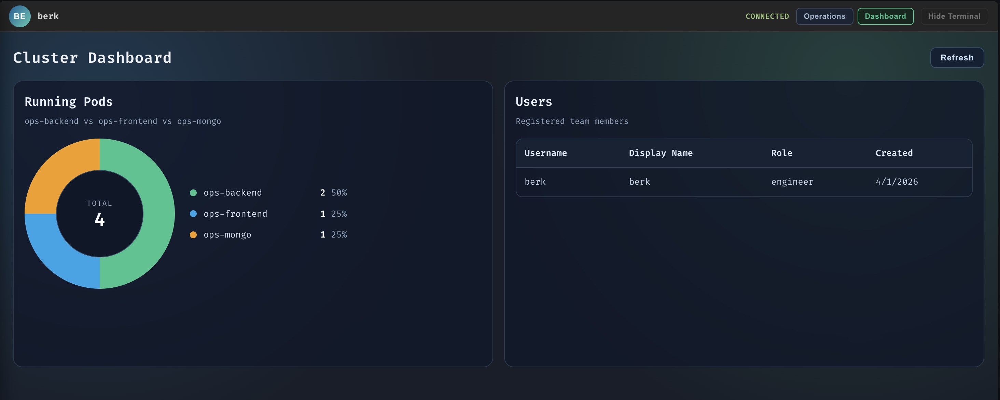
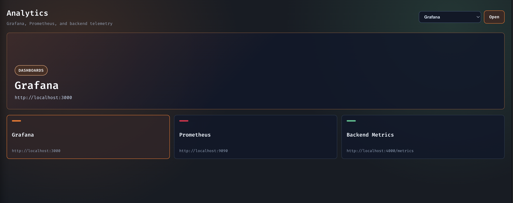

OpsCommand
OpsCommand is a collaborative DevOps workspace that combines team chat, a live ops terminal, a user dashboard, and Kubernetes-aware commands in one interface. This documentation is built directly from the repository's README, source files, manifests, and screenshots, so every claim here traces back to code or checked-in config.
docs/index.html, designed for GitHub Pages and local static preview.
Overview
OpsCommand unifies collaboration and Kubernetes operations. The frontend gives engineers a split workspace for chat and terminal commands, while the backend authenticates users, persists history, executes slash commands, scrapes cluster state, and publishes telemetry.
What it does
- Real-time team chat over Socket.io.
- Slash-command ops terminal for Kubernetes workflows.
- JWT-based auth, profile updates, and persisted message history.
What it is for
- Incident response and routine cluster work.
- Engineering teams who need one workspace instead of several tools.
- Local development with Docker Compose or Kubernetes/Skaffold.
What was read
README.md,requirements.md,project_report.md,system_modeling.md.- Backend and frontend source modules.
- Kubernetes, monitoring, and GitHub Actions config.

Repository map
The list below covers the relevant non-ignored files discovered under the project root. Ignored
directories such as .git, node_modules, dist, build,
__pycache__, and .env are excluded on purpose.
Core, docs, and toolchain files 22 files
README.mdrequirements.mdproject_report.mdproject_report.pdfsystem_modeling.mdindex.html(root redirect)docker-compose.ymlskaffold.yamlkind-config.yaml.gitignore.github/workflows/deploy-pages.yml.github/workflows/ci.yamlbackend/package.jsonbackend/package-lock.jsonfrontend/package.jsonfrontend/package-lock.jsonbackend/Dockerfilefrontend/Dockerfilefrontend/README.mdfrontend/index.htmlfrontend/eslint.config.jsfrontend/vite.config.js
Backend source files ⚠️ needs docs
backend/server.jsbackend/routes/auth.jsbackend/config/passport.jsbackend/middleware/auth.jsbackend/models/User.jsbackend/commands/clear.jsbackend/commands/help.jsbackend/commands/logs.jsbackend/commands/restart.jsbackend/commands/status.jsbackend/commands/userlist.jsbackend/commands/visualize.js
Frontend source files ⚠️ needs docs
frontend/src/main.jsxfrontend/src/App.jsxfrontend/src/config/runtime.jsfrontend/src/components/Analytics.jsxfrontend/src/components/Dashboard.jsxfrontend/src/components/LoginScreen.jsxfrontend/src/components/OpsTerminal.jsxfrontend/src/components/ProfileSidebar.jsxfrontend/src/components/TeamChat.jsxfrontend/src/App.cssfrontend/src/index.cssfrontend/src/components/Analytics.cssfrontend/src/components/Dashboard.cssfrontend/src/components/LoginScreen.cssfrontend/src/components/OpsTerminal.cssfrontend/src/components/ProfileSidebar.cssfrontend/src/components/TeamChat.css
Schema, deployment, and monitoring config 13 files
k8s/backend.yamlk8s/configmap.yamlk8s/frontend.yamlk8s/ingress.yamlk8s/mongo.yamlk8s/monitoring.yamlk8s/rbac.yamlk8s/secret.yamlmonitoring/prometheus/prometheus.ymlmonitoring/prometheus/alerts.ymlmonitoring/grafana/provisioning/datasources/prometheus.ymlmonitoring/grafana/provisioning/dashboards/dashboards.ymlmonitoring/grafana/dashboards/opscommand-overview.json
Assets and media 5 files
assets/operations.pngassets/dashboard.pngassets/analytics.pngfrontend/src/assets/react.svgfrontend/public/vite.svg
Quick Start
The quickest path to a working setup is Docker Compose. If you want the Kubernetes path, the manifests and Skaffold config are ready too.
1. Install dependencies
cd frontend
npm install
cd ../backend
npm install2. Start the stack
cd ..
docker-compose up
This brings up the frontend on http://localhost:5173, backend on
http://localhost:4000, MongoDB on 27017, Prometheus on
9090, Grafana on 3000, and Node Exporter on 9100.
3. Sign in or register
The login screen talks to /api/auth/login and /api/auth/register,
then stores the JWT in localStorage under ops_token.
4. Try your first commands
/help
/status
/visualize
Regular text goes to team chat, while anything starting with / becomes an ops command.

Architecture
The design is intentionally small and direct: a React client talks to an Express backend by both REST and Socket.io, while the backend persists messages in MongoDB and reaches the Kubernetes API through the official client library.
Engineer
│
▼
Browser ── REST/JWT ──► Express backend ──► MongoDB
│ │
│ ├──► Socket.io events (team chat + ops logs)
│ ├──► Kubernetes client-node API
│ └──► Dynamic command loader from backend/commands
│
└── WebSocket ─────────────► Real-time updates back to the UIKey decisions visible in source
- Commands are discovered at startup by reading
backend/commands/*.js. - The frontend uses one input bar: slash-prefixed text becomes ops traffic; everything else is chat.
- Auth state is JWT-based, while the code also keeps a separate passport session helper in source.
- Prometheus metrics are exported from the backend on
/metrics.
Flow in plain English
- Login or register in the browser.
- Receive a token and store it locally.
- Open the split workspace and send chat or ops commands.
- Render live results, history, dashboard data, and monitoring links.
API Reference
This reference stays strictly inside the code that exists. If a module is lightly commented or not wired into the current runtime path, that is called out directly.
backend/server.js ⚠️ needs docs
Purpose: boot the HTTP server, connect to MongoDB with retry logic, configure the Kubernetes clients, mount auth routes, expose metrics, and wire the live chat / ops command transport.
| Surface | Behavior | Notes |
|---|---|---|
| GET /metrics | Returns Prometheus metrics from the local registry. | Includes default Node metrics plus custom command counters and latency histogram. |
| GET /api/dashboard/overview | Requires Bearer token, then returns running pod counts and user list. | Uses verifyToken from backend/routes/auth.js. |
| Socket events | team-message, ops-command, and legacy send_message. |
Messages are persisted to MongoDB and rebroadcast as chat or ops log events. |
Side effects: the module opens the server on 0.0.0.0:4000, starts a MongoDB
connection attempt, loads commands dynamically, and emits operational logs to connected clients.
backend/routes/auth.js ⚠️ needs docs
| Route | Request | Response |
|---|---|---|
POST /api/auth/register |
{ username, displayName, password } |
201 { token, user }; validates required fields and minimum password length. |
POST /api/auth/login |
{ username, password } |
{ token, user }; rejects missing or invalid credentials. |
GET /api/auth/me |
Bearer token in Authorization header. |
{ user }; returns 401 when no token or token is invalid. |
PUT /api/auth/profile |
{ displayName?, currentPassword?, newPassword? } plus Bearer token. |
{ token, user }; re-signs the token after updates. |
- Token expiry:
7d. - JWT payload:
{ id, username, displayName }. - Default secret fallback in source:
opscommand-secret-key-change-in-production.
backend/models/User.js ⚠️ needs docs
| Field / Method | Signature or shape | Notes |
|---|---|---|
username |
String, required, unique, 3-30 chars. | Trimmed before save. |
displayName |
String, required, 1-50 chars. | Trimmed before save. |
password |
String, required, at least 6 chars. | Hashed in a pre('save') hook with bcrypt salt rounds of 10. |
role / permissions |
Role enum: admin, engineer, viewer. |
Default role is engineer; permissions are inferred from role when the array is empty. |
comparePassword(candidatePassword) |
Instance method | Returns bcrypt comparison result. |
toJSON() |
Instance method | Strips password from serialized output. |
backend/middleware/auth.js ⚠️ needs docs
This file exports session-oriented helpers and a command allowlist. It is present in source,
but the active backend runtime currently uses JWT auth middleware in server.js
rather than Express session auth.
isAuthenticated(req, res, next)— callsreq.isAuthenticated().getSocketUser(socket)— readssocket.request.session?.passport?.user.protectedCommands—['/restart', '/execute'].isProtectedCommand(commandName)— membership test for the allowlist.
backend/config/passport.js ⚠️ needs docs
Configures passport-github2 with GITHUB_CLIENT_ID,
GITHUB_CLIENT_SECRET, and GITHUB_CALLBACK_URL, then serializes a simple
user object from the GitHub profile.
backend/server.js entrypoint. The backend package manifest in this repo also does
not list Passport-related dependencies.
backend/commands/*.js ⚠️ needs docs
| Command | Signature | What it does |
|---|---|---|
/clear |
execute(data, context) |
Broadcasts clear-ops-terminal and confirms terminal reset. |
/help |
execute(data, context) |
Builds a live help message from the loaded command map. |
/logs <pod-name> |
execute(data, context) |
Reads the last 20 log lines from a pod in the default namespace. |
/restart <deployment-name> |
execute(data, context) |
Reads and replaces the deployment, stamping kubectl.kubernetes.io/restartedAt. |
/status |
execute(data, context) |
Counts total and running pods in the default namespace. |
/userlist |
execute(data, context) |
Queries MongoDB users and renders an ASCII table of usernames, roles, and permissions. |
/visualize |
execute(data, context) |
Produces an ASCII health board for backend uptime, pod status, and prior failures. |
The command loader in server.js reads every .js file in this folder,
inserts it into a map keyed by command.name, and dispatches via the shared
handleCommand() helper.
frontend/src/App.jsx ⚠️ needs docs
Orchestrates the login flow, profile sidebar, top bar, page switching, and the unified input
bar that routes slash commands to the ops terminal. It imports the backend URL from
frontend/src/config/runtime.js and opens the Socket.io client immediately.
- State: user, token, auth loading, profile panel, terminal collapse, active page, socket connection.
- Auth bootstrap: reads
ops_tokenfromlocalStorageand validates it with/api/auth/me. - Unified send rule: messages starting with
/emitops-command; all others emitteam-message.
frontend/src/components/Dashboard.jsx ⚠️ needs docs
Renders a donut chart of running pods by service and a user table. It calls the authenticated
dashboard endpoint, then normalizes the response into ops-backend,
ops-frontend, and ops-mongo counts.
frontend/src/components/Analytics.jsx ⚠️ needs docs
Presents launch targets for Grafana, Prometheus, and backend metrics. The selected destination updates the visible panel and opens the target in a new tab.
frontend/src/components/LoginScreen.jsx ⚠️ needs docs
Handles both register and login flows. Successful auth writes the token and user payload to
localStorage, then hands control back to App.
frontend/src/components/OpsTerminal.jsx partly documented
The right-side terminal keeps a log history, pretty-prints JSON when it can, classifies
severity from text content, and listens for load_ops_history,
ops-log, and clear-ops-terminal.
looksLikeCodeBlock(text)— detects JSON-like or multi-line structured output.classifyMessage(text)— returnsinfo,success,warning, orerror.tryPrettyJson(text)— returns formatted JSON ornull.
frontend/src/components/TeamChat.jsx partly documented
The left-side chat panel loads persisted chat history, appends live messages, and derives avatar initials and colors from sender names.
initials(name)— turns sender names into short avatar text.avatarColor(name)— stable pseudo-random color selection.formatTime(timestamp)— renders message timestamps for the bubble footer.
frontend/src/components/ProfileSidebar.jsx ⚠️ needs docs
Slide-in profile editor for changing display name and password, with token refresh after a successful update and a local logout path.
frontend/src/config/runtime.js ⚠️ needs docs
Resolves runtime URLs from Vite environment variables or the current host. Local development
defaults to localhost, while ingress deployments reuse the current host and append
the Grafana or Prometheus path prefix.
frontend/src/main.jsx ⚠️ needs docs
Bootstraps the React root at #root and renders App inside
StrictMode.
Configuration
This section covers the knobs present in the source: environment variables, Kubernetes manifests, monitoring config, and the deployment helpers used by Docker Compose, Skaffold, and GitHub Actions.
Environment variables
| Key | Used by | Type / default | What it controls |
|---|---|---|---|
PORT |
Backend server, Docker Compose, K8s ConfigMap | String / 4000 |
HTTP port for the backend entrypoint. |
MONGO_URI |
Backend, Docker Compose, K8s Secret | String / mongodb://localhost:27017/opscommand in source |
MongoDB connection string used by Mongoose. |
JWT_SECRET |
backend/routes/auth.js |
String / opscommand-secret-key-change-in-production |
Signs and verifies auth tokens. |
GITHUB_CLIENT_ID |
backend/config/passport.js |
String / no default | GitHub OAuth client ID for the Passport helper. |
GITHUB_CLIENT_SECRET |
backend/config/passport.js |
String / no default | GitHub OAuth client secret for the Passport helper. |
GITHUB_CALLBACK_URL |
backend/config/passport.js |
String / http://localhost:4000/auth/github/callback |
Callback URL for the GitHub Passport strategy. |
VITE_BACKEND_URL |
frontend/src/config/runtime.js |
String / derived from host | Overrides the backend API base URL. |
VITE_GRAFANA_URL |
frontend/src/config/runtime.js, frontend deployment |
String / derived from host or http://localhost:3000 |
Controls the analytics link target for Grafana. |
VITE_PROMETHEUS_URL |
frontend/src/config/runtime.js, frontend deployment |
String / derived from host or http://localhost:9090 |
Controls the analytics link target for Prometheus. |
Deployment and infrastructure config
Docker Compose
appservice builds./backendand maps port4000.frontendservice builds./frontendand maps port5173.mongo,prometheus,grafana, andnode-exporterare included in the stack.- Grafana admin defaults to
admin / admin.
Skaffold and kind
skaffold.yamlbuilds backend and frontend artifacts locally.- Port forwards are configured for
5173,4000,9090, and3000. kind-config.yamlenables ingress-ready control-plane port mappings for80and443.
Kubernetes
k8s/backend.yamldeploysops-backendwith two replicas andopsbot-sa.k8s/frontend.yamldeploysops-frontendand exposes a NodePort service.k8s/mongo.yamlprovisions a PVC and MongoDB deployment.k8s/ingress.yamlroutes/socket.io,/api, and/foropscommand.local.
Monitoring
- Prometheus scrapes the backend at
/metrics. - Alert rules track high error rate and p95 latency.
- Grafana is provisioned with a Prometheus datasource and the
OpsCommand Monitoringdashboard.

| File | Key values | What it means |
|---|---|---|
k8s/rbac.yaml |
opsbot-sa, opsbot-role, opsbot-rolebinding |
Read-only pod access plus deployment patch/update permissions. |
k8s/secret.yaml |
Base64 encoded MONGO_URI |
Points K8s workloads at mongodb://mongo-service:27017/opscommand. |
monitoring/prometheus/prometheus.yml |
5s scrape interval, 5s evaluation interval | Scrapes Prometheus itself, the backend, and node-exporter. |
monitoring/prometheus/alerts.yml |
Error rate > 20%, p95 latency > 1s | Matches the alert rules also embedded in k8s/monitoring.yaml. |
Guides
These are the three workflows that show up most clearly in the codebase: auth and profile updates, day-to-day ops command use, and local/Kubernetes deployment.
Authenticate and manage your profile
- Open the login screen and either register or sign in.
- The frontend stores the token in
localStorageand validates it with/api/auth/me. - Open the profile sidebar from the avatar to change your display name or password.
- Password changes require the current password and a new password of at least 6 characters.
Operate the cluster
- Use
/helpto discover the available commands. - Use
/statusto see pod counts and/logs <pod>to inspect logs. - Use
/restart <deployment>to stamp a rollout restart annotation. - Use
/visualizefor the ASCII health map and/userlistfor role/permission inventory.
Deploy locally
- Run the Docker Compose stack for the easiest local path.
- Use
kind create cluster --config kind-config.yamlfor K8s. - Then run
skaffold devto build and deploy the frontend and backend images. - Use
opscommand.localwith the ingress controller for browser access.
Examples
These snippets are copy-paste ready and mirror the commands and request shapes already present in the repository documentation or source.
Register a user
curl -X POST http://localhost:4000/api/auth/register \
-H 'Content-Type: application/json' \
-d '{"username":"jdoe","displayName":"Jane Doe","password":"secret123"}'Log in and fetch the current user
TOKEN=$(curl -s -X POST http://localhost:4000/api/auth/login \
-H 'Content-Type: application/json' \
-d '{"username":"jdoe","password":"secret123"}' | jq -r .token)
curl http://localhost:4000/api/auth/me \
-H "Authorization: Bearer $TOKEN"Monitoring queries from the README and dashboard
sum(rate(opscommand_commands_total[1m]))
100 * sum(rate(opscommand_commands_total{status="error"}[5m]))
/ clamp_min(sum(rate(opscommand_commands_total[5m])), 0.001)
histogram_quantile(0.95, sum(rate(opscommand_command_duration_seconds_bucket[5m])) by (le))Local deployment commands
docker-compose up
kind create cluster --config kind-config.yaml
skaffold devSlash commands from the ops terminal
/help
/status
/logs backend-pod-name
/restart backend-deployment
/visualize
/userlist
/clear

auth, commands,
k8s, or monitoring.